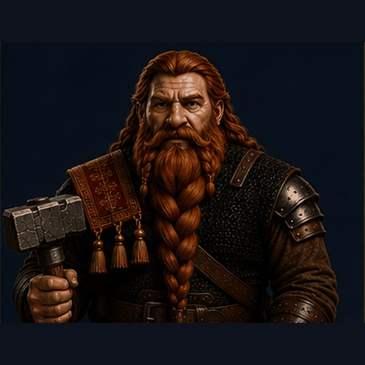

Forge of Fury
Active campaign. Beneath Stone Tooth Mountain, Tempest Company walks a living dungeon. This page is for the table: what happened last time, your character sheets, and Deep Memory (the archive).
"Active campaigns are living knowledge. The next session can change everything."
Last time on Forge of Fury…
Thrain’s Session Recap — read at the table. Changes every week. Full session (recap + notes) and the archive live in Deep Memory.

Session 15 · 7/13/26 · Thrain's Session Recap
The obsidian rune becomes the focus for Qiran. He doesn't believe that they form into one, but separately displays their own power. Snurrevin says Nightscale, a black dragon, who waits underwater and attacks with poison. Thinking about what the party will need, Thrain's intelligence Hat of Disguise turns him into a leaf pile and the following info: Nightscale is not an older dragon but getting there. It has grown to be very cunning. The mountain environment has changed to adapt around her. Something recently has caused a disruption where Nightscale itself knows she can be in danger.
Leaving the crazies tending to the forge, Mantis leads us to continue exploring and mapping, as we were tasked to do. We approach a room full of death. Remains of dwarves and orcs with shattered gear litter the floor. In the center, a dark pool. Surprisingly, an ethereal undead dwarf climbed out of the pool. "WE LOST!" Initiative is rolled…
Benn turns undead. Arundil (the ghost) runs through Thrain and down the hallway. A second ghost appears from the opposite end of the hallway and targets Benn with a fear effect. Benn stands tall, warding its ghastly advance. Lard sprints to attack and lands a couple of hits. Mantis gains the second ghost-like creature, Dulik's attention for a conversation but Lard is relentless with hits and lets out a battle cry. No true answers were revealed as Dulik explodes from Qiran's attack. The party has doors to explore along the hallway. We begin to snoop.
The soundtrack changed to battle music. Thrain ignores the sound of combat to look in a chest. There's: 1200 silver, 3000 copper, 2 topaz, 1 star sapphire inside a square of silk. Thrain gets a Rug of Smothering!! Meanwhile… the rest of the party was struggling with animated armor but ultimately takes care of the threat.
Open Session 15 in Deep Memory — Thrain's Session Recap + Deep Memory session notes side by side
Company Character Sheets
Your Company Character Sheet for this table — something you can learn between turns. Accurate. Yours. Tempest Company only. Opens the play sheet, not the Discovery Report (those live in Deep Memory).


Enter: Deep Memory
The vault — sessions (both voices), discovery reports, companions. Tempest Company’s mural lives there as the door into session recaps.

Deep Memory
Sessions · reports · companions · the stone that keeps it